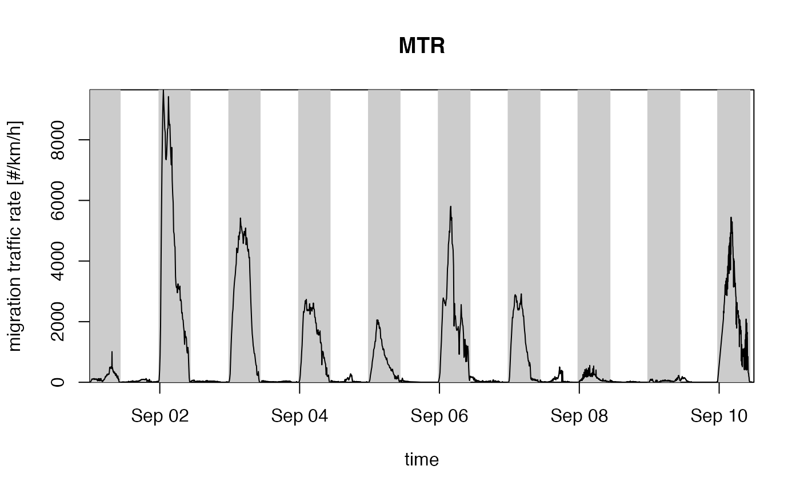
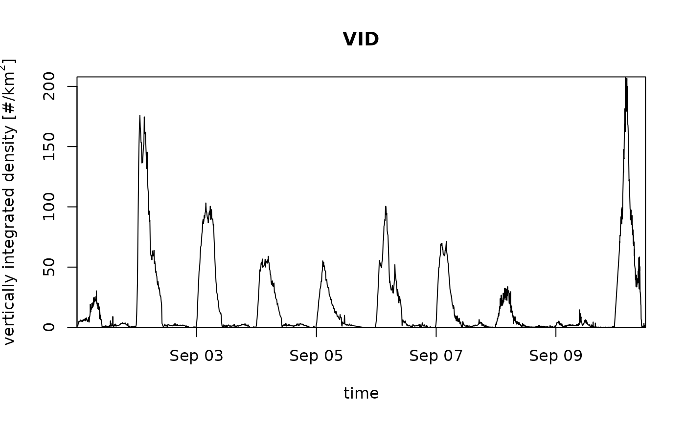

Plot an object of class vpi.
# S3 method for vpi plot( x, quantity = "mtr", xlab = "time", ylab = "migration traffic rate [#/km/h]", main = "MTR", night_shade = TRUE, elev = -0.268, lat = NULL, lon = NULL, ylim = NULL, nightshade = TRUE, ... )
| x | 1 class object inheriting from class |
|---|---|
| quantity | Character string with the quantity to plot, one of
' |
| xlab | A title for the x-axis. |
| ylab | A title for the y-axis. |
| main | A title for the plot. |
| night_shade | Logical, whether to plot night time shading. |
| elev | Numeric, sun elevation to use for day/night transition, see sunrise. |
| lat | (optional) Latitude in decimal degrees. Overrides the lat
attribute of |
| lon | (optional) Longitude in decimal degrees. Overrides the lon
attribute of |
| ylim | y-axis plot range, numeric atomic vector of length 2. |
| nightshade | Deprecated argument, use night_shade instead. |
| ... | Additional arguments to be passed to the low level plot plotting function. |
The integrated profiles can be visualized in various related quantities, as specified by
argument quantity:
vid"Vertically Integrated Density, i.e. the aerial surface density of individuals. This quantity is dependent on the assumed radar cross section per individual (RCS)
vir"Vertically Integrated Reflectivity. This quantity is independent of the value of individual's radar cross section
mtr"Migration Traffic Rate. This quantity is dependent on the assumed radar cross section (RCS)
rtr"Reflectivity Traffic Rate. This quantity is independent on the assumed radar cross section (RCS)
mt"Migration Traffic. This quantity is dependent on the assumed radar cross section (RCS)
rt"Reflectivity Traffic. This quantity is independent on the assumed radar cross section (RCS)
ffHorizontal ground speed in m/s
ddHorizontal ground speed direction in degrees
uGround speed component west to east in m/s
vGround speed component south to north in m/s
heightMean flight height (height weighted by reflectivity eta) in m above sea level
The height-averaged speed quantities (ff,dd,u,v) and height are weighted averages by reflectivity eta.
# vertically integrate a vpts object: vpi <- integrate_profile(example_vpts) # plot the migration traffic rates plot(vpi)# plot the vertically integrated densities, without night shading: plot(vpi, quantity = "vid", night_shade = FALSE)